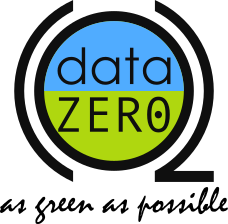

Malgré les problèmes que posent les data centers, des solutions plus écologiques sont recherchées. Par exemple, il y a des moyens de diminution de consommation ou l’utilisation d’énergies renouvelables.
Solutions à l'échelle du consommateur
Pour réduire l’empreinte écologique des data centers, il faut baisser leur consommation d’énergie. Une solution serait de sensibiliser les personnes à adopter une attitude éco-responsable. Même de petits gestes comme trier, supprimer ses mails sont importants. Gérez la taille de vos pièces jointes que vous envoyez et privilégiez les sites de dépôts temporaires. Il faut aussi essayer de stocker nos données sur un disque dur externe plutôt que sur notre Cloud.
Quand une recherche est faite sur internet, plus l’on est précis, moins cela consommera ou l’utilisation de lien direct vers un site est encore meilleure. Limiter le nombre d’onglets ouverts dans nos navigateurs est aussi un moyen de réduire notre impact sur l’environnement.
Le visionnage de vidéo en ligne est l’un des plus grands facteurs d’échanges de données soit 60% du flux mondial de données. Donc une optimisation de cet usage est nécessaire pour diminuer les gaz à effet de serre. Adapter la résolution de la vidéo à celle de l’appareil sur lequel on la visionne, désactiver la lecture automatique sont des gestes importants. Pour la musique, il est conseillé d’utiliser des musiques téléchargées ou les plateformes de streaming audio comme Spotify ou Deezer au lieu de regarder des clips.
Appication mobiles
Solutions à l'échelle des entreprises
de data centers
Parallèlement, les fabricants de data centers doivent faire des efforts. Ils doivent utiliser les composants électroniques les plus performants économiquement et écologiquement. Les méthodes de gestion et de calcul des données ne sont pas encore assez efficaces. Les optimiser permettrait d’améliorer le rendement des data center et de consommer moins d’énergie par tâche effectuée.
Le refroidissement des data centers est primordial à son fonctionnement mais très énergivore. Donc beaucoup de solutions ont été mises en place. Certaines sont concluantes comme l’utilisation de la chaleur produite pour chauffer des infrastructures (domiciles). L’entreprise Quarnot computing anywhere est spécialisée dans le chauffage écologique à l’aide de radiateurs qui se servent d’une chaleur recyclée. Un data center a été installé sous une piscine municipale pour la chauffer tout en le refroidissant naturellement avec l’eau. Certains sont placés dans des zones froides pour comme Google qui a fait le choix d’en ouvrir un à Hamina en Finlande.
D’autres ont décidés déjà de s’orienter vers les énergies renouvelables pour les data centers.
Récemment, les chercheurs portent plus d’intérêt pour l’utilisation des énergies renouvelables pour fournir une partie de la consommation globale d’énergie des data centers. Cependant, alors que les énergies renouvelables sont disponibles par intermittence, la demande des datacenters doit être satisfaite, même lorsque l’énergie verte n’est pas disponible.
Transfert d'énergies
Un système de transfert de puissance gère en toute sécurité les sources d’énergie en isolant l’électricité de différentes sources et en s’assurant que le data center reçoive suffisamment de puissance. Stewart et Shen ont décrit un programme de recherche pour la gestion des énergies renouvelables dans les data centers, concluant que prendre en compte la charge des tâches des datacenters permet de réduire encore leur d´dépendance à l’égard des énergies non renouvelables. Malkamäki et Ovaska ont étudié l’énergie solaire et le potentiel de refroidissement dans les data centers européens. Ils ont aussi mis en évidence les relations de base entre l’énergie solaire, la température de l’air et les besoins ultérieurs de refroidissement. Malheureusement, les endroits où le potentiel de production d’énergie solaire est élevé sont moins favorables au refroidissement en raison de sa température ambiante élevée. Arlit et al. ont introduit une méthode pour exploiter un data center avec de l’énergie renouvelable qui minimise la dépendance à la puissance du réseau tout en minimisant le coût d’investissement.
Ils y parviennent en intégrant la demande des data centers et la disponibilité des ressources pendant leur exploitation. Ils ont conçu et géré la charge du data center afin d’utiliser les énergies renouvelables sur site, principalement avec des PV, et ainsi compenser entièrement l’utilisation d’énergie non renouvelable du réseau. Plus précisément, ils ont d´écrit comment combiner l’utilisation des énergies renouvelables avec la planification dynamique de la charge de travail informatique et les techniques de gestion intégrées pour améliorer l’utilisation globale du data center, tout en permettant à la demande d’être adaptées en fonction de la disponibilité des ressources

Énergies renouvelables
Réduction de consommation
Pour réduire la consommation et recycler l’énergie thermique autrement gaspillée, de nombreux chercheurs ont étudié l’introduction de technologies différentes pour les data centers. L’une d’entre elles est la Cogénération de chaleur et d’électricité (CHP) qui pour rendre le datacenter plus rentable et énergétiquement efficace. L’utilisation de cette technologie répond à l’ensemble des besoins énergétiques des data centers, avec des unités d’absorption utilisées pour récupérer la chaleur déchargée par un moteur thermique ou une pile à combustible. En outre, une application plus large de la cogénération réduirait la demande d’électricité des centrales et réduirait la congestion des infrastructures de transport et de distribution d’électricité. Guizzi et al. ont présenté une analyse comparative entre un data center conventionnel en utilisant une cogénération pour produire de l’électricité couplée avec une machine d’absorption pour fournir du froid.
Système de cogénération
Plus tard, Guizzi et Manno ont discuté de l’évaluation économique et énergétique d’un système de cogénération, pour un data center adapté à une charge IT de 100 kW, basé sur un reformeur à vapeur à membrane de gaz naturel produisant un flux d’hydrogène pur pour la production d’électricité dans une membrane électrolyte polymère pile à combustible. La chaleur a été récupérée à la fois de l’unité de reformage et de la pile à combustible afin de répondre aux besoins d’un immeuble de bureaux situé à proximité. Les simulations ont démontré que 47% de réduction des 3 coûts pourraient être atteints lorsque l’énergie thermique provenant du système de cogénération serait récupérée. En outre, le système innovant de gestion de l’énergie peut également offrir des économies substantielles d’un point de vue environnemental. Ebay a récemment commuté un data center dans l’Utah entièrement alimenté par des piles à combustible de 6 MW alimentées par du gaz naturel reformé. Il est à noter que ce type d’approvisionnement énergétique rend l’infrastructure plus fiable vis à vis des pannes du réseau.
Utilisation de panneaux photovoltaïques
Même si l’utilisation des énergies renouvelables sur place dans les data centers réels est encore à un stade précoce, certaines entreprises ont mis en œuvre différentes solutions d’énergie verte dans leur portefeuille. La mise en œuvre de l’énergie solaire dans les data centers n’a pas été largement utilisée, car il faut une très grande surface de panneaux photovoltaïques pour produire même une fraction de l’énergie requise par ces infrastructures de haute densité énergétique. Néanmoins, il existe déjà des installations réussies. Des panneaux solaires de 100 kW occupant 730 m2 sont situés sur le toit du data center sur le campus d’Emerson dans le Missouri. De la même façon et pour tester le potentiel d’utilisation de l’énergie solaire photovoltaïque pour les data centers, Intel a installé 10 kW d’´électricité dans un data center au Nouveau-Mexique et Goiri et al. a développé Parasol, un prototype de datacenter vert qui comprend un petit conteneur, un ensemble de panneaux solaires, un bloc de batterie électrique et des convertisseurs. De même, des chercheurs de l’Université du Massachusetts ont construit Blink, un cluster de cartes mères d’ordinateurs portables alimenté par deux micro- éoliennes et deux panneaux solaires. Un petit data center en Illinois est devenu le premier data center à 100% éolien aux Etats-Unis en passant ses besoins énergétiques quotidiens avec une éolienne de 500 kW.
Le projet ANR DATAZERO
DATAZERO est un projet financé par l’ANR, qui vise à concevoir un centre de calcul en s’appuyant sur les technologies les plus récentes en termes de sources d’énergie renouvelables, d’équipements électriques, de serveurs informatiques et de systèmes de gestion du cloud. Ce projet vise à réduire de façon spectaculaire la consommation d’énergie des futurs data centers en utilisant les sources renouvelables suivantes : les cellules photovoltaïques, les éoliennes, les piles à combustibles.

Logo du projet DATAZERO
Dans DATAZERO, la question adressée est la façon de gérer l’électricité et les flux de services afin de fournir des services aux clients de manière robuste et efficace au sein de data centers fonctionnant avec plusieurs sources d’énergie. Pour répondre à cette question, nous avons identifié sept enjeux scientifiques :
- 1 - Faire coïncider les contraintes de demande et d’enveloppe sur les plans électriques et informatiques
- 2 - Dimensionner correctement l’équipement.
- 3 - Contrôler de façon optimale les convertisseurs électriques.
- 4 - Planifier et gérer la charge informatique.
- 5 - Prendre en compte la gestion thermique.
- 6 - Etudier la complexité du problème d’optimisation.
- 7 - Développer un outil de simulation.
Les principaux objectifs de DATAZERO sont des datacenters de taille moyenne (jusqu’à 1000 m2 et environ 1 MW) où la charge informatique peut être gérée via Virtualisation ou Cloud orchestrator couramment rencontrés dans les entreprises et les institutions publiques. L’exécution de ces différents travaux se fera en collaboration entre les différents partenaires : les laboratoires LAPLACE (Toulouse), FCLAB (Belfort), IRIT (Toulouse), FEMTO-ST (Besançon) et la société EATON (Grenoble).